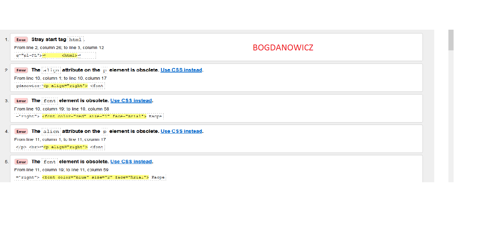

Walidacja jest to sprawdzenie poprawnosci wykonania strony internetowej ze wzgledu na zastosowana skladnia.
Do walidacji sluza wyspecjalizowane strony internetowe lub oficjalne programy.
Walidacja polega na wyslaniu naszej sprawdzanej strony do walidatora.
Walidator odpowie jakie sa bledy i w ktorym miejscu kodu.

Wróć